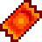
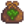
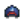

Ticket de Premio
| Articulo Incompleto
Este articulo está incompleto y le falta información. Puedes ayudar a Stardew Valley Wiki ampliando información! |
| Ticket de Premio | |
|  | |
| Lleva esto a la máquina de premios en la casa de Lewis para una recompensa especial. | |
| Información | |
| Origen |
|
Los Tickets de premio se consiguen a través de Misiones, Misiones especiales, abriendo el cofre del final del laberinto durante la Víspera de los espíritus, al repetir una victoria en el Festival del huevo y victoria repetida en el Festival del hielo. También se pueden comprar en la Feria de Stardew Valley por 1000 puntos estrella. Se puede encontrar uno, en una caja ubicada detrás del puesto del Librero.
Los tickets de premio pueden intercambiarse por premios especiales en la Máquina de premios, en la Mansión del alcalde.
Premios

Cuando se usa la máquina de premios, el jugador puede ver cuántos Tickets de Premio tiene en ese momento, además de ver los siguientes tres premios que entregará la máquina. Reclamar un premio le da al jugador el primer premio en la línea y mueve los siguientes premios un espacio a la izquierda.
Los posibles contenidos de los primeros 22 premios están predeterminados. Para números de lista de premios con múltiples contenidos posibles, solo uno será elegido.[1]
| Número de la lista de premios | Nombre | Descripción | Notas |
|---|---|---|---|
| 1 | Plántalas en primavera. Crece en 3 días. | Se puede obtener entre Invierno 21 y Primavera 23. | |
| Plántala en verano. Tarda 6 días en crecer, sigue produciendo después de la primera cosecha. | Se puede obtener entre Primavera 24 y Verano 20 | ||
|  Semillas de brócoli (12) | Plántalo en otoño. Tarda 8 días en madurar, continúa produciendo después de la primera cosecha. | Se puede obtener entre Verano 21 y Otoño 20 | |
| Este melón especial crece en invierno. Tarda 7 días en crecer. | Se puede obtener entre Otoño 21 e Invierno 20 | ||
| 2 | Tarda 28 días en producir un melocotonero adulto. Da fruta en verano. Solo crece si las 8 casillas que lo rodean están vacías. | Premio elegido al azar | |
| Tarda 28 días en producir un naranjo adulto. Da fruta en verano. Solo crece si las 8 casillas que lo rodean están vacías. | |||
| 3 | Aquí hay un poco de todo. ¡Plántalas y a ver qué sale! | Premio elegido al azar | |
| Un surtido de semillas florales. ¡Plántalas y a ver que crece! | |||
| 4 | Un herrero puede abrirlo. ¿Quién sabe lo que habrá dentro? | ||
| 5 | Un regalo muy especial que deleita a cualquiera. | ||
| 6 | Se entrega si la Casa de campo ha sido mejorada al menos una vez | ||
| Se entrega si la Casa de campo no ha sido mejorada | |||
| 7 | Riega las 8 casillas adyacentes cada mañana. | Premio elegido al azar | |
| Convierte las verduras en encurtidos y la fruta en mermelada. | |||
| Crecen setas en él cada cierto tiempo. Cuantos más árboles silvestres haya cerca mejor funcionará. | |||
| 8 | Tarda 28 días en producir un manzano adulto. Da fruta en otoño. Solo crece si las 8 casillas que lo rodean están vacías. | Premio elegido al azar | |
| Tarda 28 días en producir un granado adulto. Da fruta en otoño. Solo crece si las 8 casillas que lo rodean están vacías. | |||
| 9 | Te haces amigo de la gente un poco más rápido. | ||
| 10 | Genera una pequeña explosión. ¡Aléjate! | Premio elegido al azar | |
| Genera una explosión. ¡Ten cuidado! | |||
| Genera una poderosa explosión. Úsala con mucho cuidado. | |||
| 11 |  Gorra Deportiva (1) | La gorra tiene el logo de un equipo vintage. | |
| 12 | Pon pescado dentro con un trozo de carbón para crear pez ahumado. El pez ahumado vale el doble. | Premio elegido al azar | |
| Pon 5 piezas de fruta o setas comestibles dentro para secarlas. | |||
| 13 | Un herrero puede abrirlo por tí. Estos cofres suelen contener antiguas reliquias y curiosidades. | Premio elegido al azar | |
| Un herrero puede abrirlo. ¿Quién sabe lo que habrá dentro? | |||
| 14 | Se puede obtener una de tres nuevas variedades | ||
| 15 | Lea esto para adquirir algo de experiencia agrícola. | Premio elegido al azar | |
| Lea esto para adquirir algo de experiencia en pesca. | |||
| Lea esto para adquirir algo de experiencia en minería. | |||
| Lee esto para ganar algo de experiencia en combate. | |||
| Lea esto para adquirir algo de experiencia en la búsqueda de alimento. | |||
| 16 | Un regalo muy especial que deleita a cualquiera. | ||
| 17 | |||
| 18 | Un herrero puede partirla en dos para ti. Estas geodas contienen una gran variedad de minerales. | ||
| 19 | Coloca aquí una fruta o una verdura. Al cabo del tiempo se convertirá en una bebida. | Premio elegido al azar | |
| ¡Colócala fuera para obtener deliciosa miel! (Excepto en invierno). | |||
| 20 | Una gema poco común y muy valiosa. | ||
| 21 | Un herrero puede abrirlo. ¿Quién sabe lo que habrá dentro? | ||
| 22 | Un raro y poderoso caramelo preparado con la energía de un fragmento prismático. |
Luego de obtener el premio N°22, los siguientes premios que se obtengan caerán en una de 9 posibles ranuras (cada una elegida con igual probabilidad). Para ranuras con múltiples contenidos posibles, solo una será elegida.[1]
| Ranura | Nombre | Descripción | Notas |
|---|---|---|---|
| 1 | Un herrero puede abrirlo. ¿Quién sabe lo que habrá dentro? | ||
| 2 | Espolvorea sobre barriles, hornos y otros equipos de refinería para recibir al instante el producto. | La cantidad de Polvo de hadas a obtener como recompensa, tiene la misma probabilidad. | |
| 3 | Una barra de iridio puro. | Premio elegido al azar | |
| ¡Pica mucho! Ten cuidado. | |||
| ¡Más potente que el café normal! | |||
| Cangrejo, pan rallado y huevo con forma de medallones. Fritas hasta que quedan doradas. | |||
| Un herrero puede abrirlo por tí. Estos cofres suelen contener antiguas reliquias y curiosidades. | |||
| 4 | Se puede obtener una de tres nuevas variedades | ||
| 5 | Un regalo muy especial que deleita a cualquiera. | ||
| 6 | ¡Guau, está cargado de joyas! Seguro que alcanzará un buen precio. | ||
| 7 | Riega las 24 casillas adyacentes cada mañana. | ||
| 8 | Se puede obtener una de las tres nuevas variedades, con una probabilidad del 25% de obtener cada una. | ||
| 25% probabilidad de obtenerlo | |||
| 9 | Genera una explosión. ¡Ten cuidado! | Premio elegido al azar | |
| Genera una poderosa explosión. Úsala con mucho cuidado. |
Regalos
Los tickets de premio no se pueden entregar como regalos a aldeanos.
Lotes
Se requiere un ticket de premio para el  Lote del Ayudante en el Tablón de anuncios de los Lotes Mezclados.
Lote del Ayudante en el Tablón de anuncios de los Lotes Mezclados.
Sastrería
El Ticket de Premio no se utiliza en la Máquina de coser pero se puede usar en la Tintura, sirviendo como tinte rojo en los tarros de tinta, situados en la casa de Emily y Haley, Camino del Sauce, 2.
Misiones
No se usa en ninguna misión.
Referencias
Historial
- 1.6: Introducido.